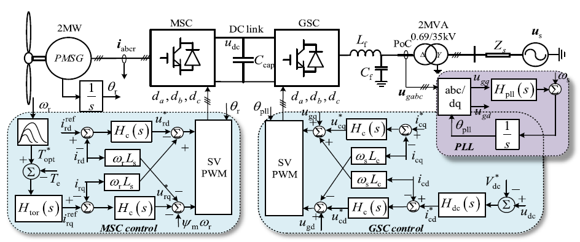
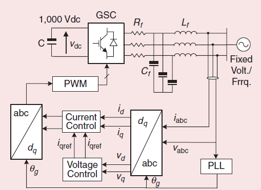
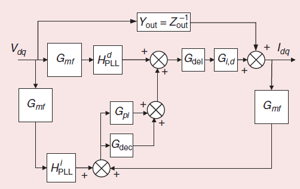
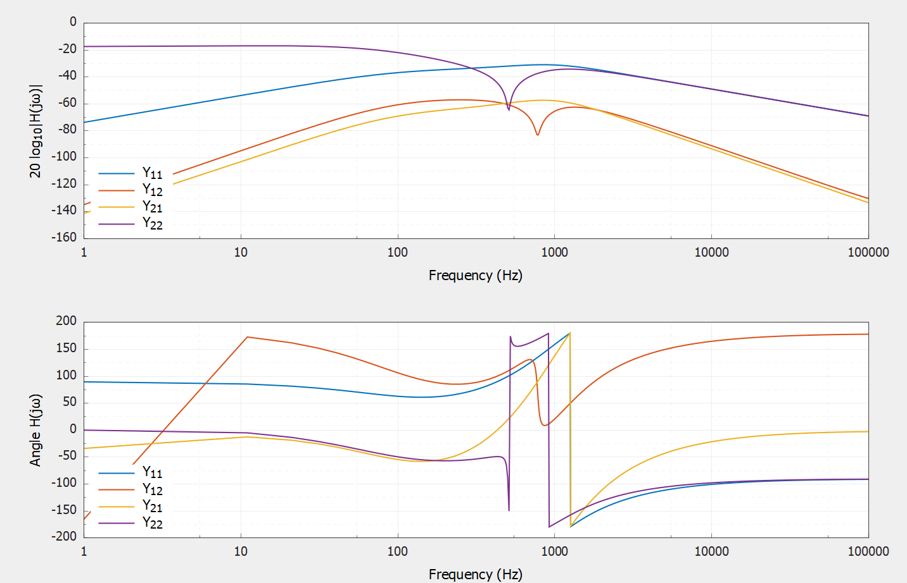

Wind Turbine Type-4
Type-IV wind turbines (WT4), also known as full-converter wind turbines, employ a generator fully interfaced with the grid through a back-to-back power electronic converter. In this configuration, all generated power is processed by the converter, allowing complete decoupling between the generator and the grid. This enables wide-range variable-speed operation and flexible, independent control of active and reactive power. Owing to their superior grid-support capability and compliance with stringent grid codes, WT4 turbines are widely applied in weak-grid and offshore wind power systems, and are typically connected to the grid via a medium-voltage collector network and a substation transformer.
Mathematical Modeling
The typical structure of the type-4 WT is depicted in Figure 1.

For the design of the model of WT type-4, the publication (10401252?) is used, with the corrections proposed in (electronics13101917?) and (pr13051292?).
Namely, the WT is modeled by observing the dq-domain admittance looking into the GSC, which includes the PLL, current controller, output filter, delay, and a second-order input filter, as shown in Fig. Figure 2.

For such a model, the admittance can be calculated by taking into account:
\[\begin{equation} Z_f = R_f + s L_f, \end{equation}\]
\[\begin{equation} Y_{out} = \frac{1}{Z_f^2 + (\omega_g L_f)^2} \begin{bmatrix} Z_f & \omega_g L_f \\ -\omega_g L_f & Z_f \end{bmatrix}, \end{equation}\]
\[\begin{equation} G_{id} = - V_{dc} \, Y_{out}. \end{equation}\]
\[\begin{equation} H_{PLL} = \frac{K_{p,\mathrm{pll}} + \frac{K_{i,\mathrm{pll}}}{s}} {s + V_{d,\mathrm{ref}} \left(K_{p,\mathrm{pll}} + \frac{K_{i,\mathrm{pll}}}{s}\right)}, \end{equation}\]
\[\begin{equation} H^{d}_{PLL} = \begin{bmatrix} 0 & -M_{q0} H_{PLL} \\ 0 & M_{d0} H_{PLL} \end{bmatrix}, \qquad H^{i}_{PLL} = \begin{bmatrix} 0 & I_{q,\mathrm{ref}} H_{PLL} \\ 0 & -I_{d,\mathrm{ref}} H_{PLL} \end{bmatrix}. \end{equation}\]
\[\begin{equation} G_{mf} = \begin{bmatrix} \dfrac{\omega_n^2}{s^2 + 2 \zeta \omega_n s + \omega_n^2} & 0 \\ 0 & \dfrac{\omega_n^2}{s^2 + 2 \zeta \omega_n s + \omega_n^2} \end{bmatrix}, \end{equation}\]
\[\begin{equation} G_{del} = \begin{bmatrix} \dfrac{1 - 0.5 T_d s}{1 + 0.5 T_d s} & 0 \\ 0 & \dfrac{1 - 0.5 T_d s}{1 + 0.5 T_d s} \end{bmatrix}, \end{equation}\]
\[\begin{equation} G_{cc} = G_{dec} + G_{pi} = \begin{bmatrix} -\left(K_{p,cc} + \dfrac{K_{i,cc}}{s}\right) & -\dfrac{\omega_g L_f}{V_{dc}^2} \\ \dfrac{\omega_g L_f}{V_{dc}^2} & -\left(K_{p,cc} + \dfrac{K_{i,cc}}{s}\right) \end{bmatrix}, \end{equation}\]
The admittance in the dq-frame is then calculated based on the flow-chart depicted in Figure 3: \[\begin{equation} Y_{dq} = (I + G_{del} G_{id} G_{cc} G_{mf})^{-1} \times (Y_{out} + G_{id} G_{del} (H^d_{PLL} + G_{cc} H^i_{PLL}) G_{mf} ). \end{equation}\]

The results of the code execution in Harmony are available in Fig. Figure 4.
